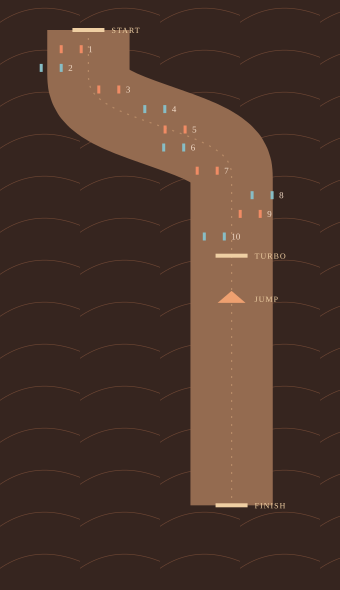
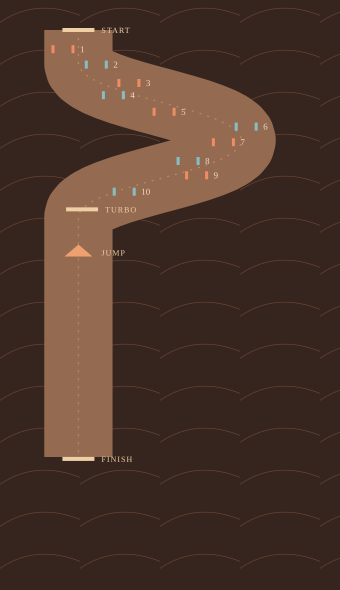
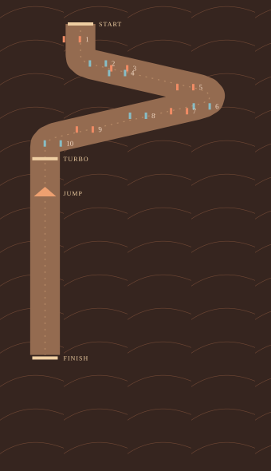

Built now · single-bend studyA · Basin sweep
A broad sweep across the slope, varied gates, then a generous straight turbo-and-jump approach.

146–191 m gate spacing
3,750 m start to finish
See each gate interval
146 · 169 · 158 · 176 · 154 · 184 · 191 · 146 · 176 m
B · Layered S
Two linked sweeps through the layers. More frequent gates reward a consistent carving rhythm, with a straight final approach.

112–165 m gate spacing
3,502 m start to finish
See each gate interval
120 · 150 · 112 · 165 · 131 · 124 · 154 · 135 · 161 m
C · Terrace turns
Wider turns with two close gate combinations and long traverses between them. More room to build speed, then deliberate slow-down moments.

90–278 m gate spacing
3,892 m start to finish
See each gate interval
248 · 90 · 94 · 278 · 255 · 94 · 90 · 270 · 225 m